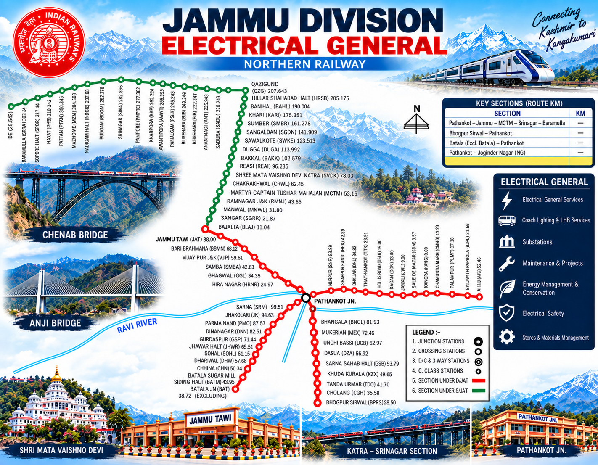
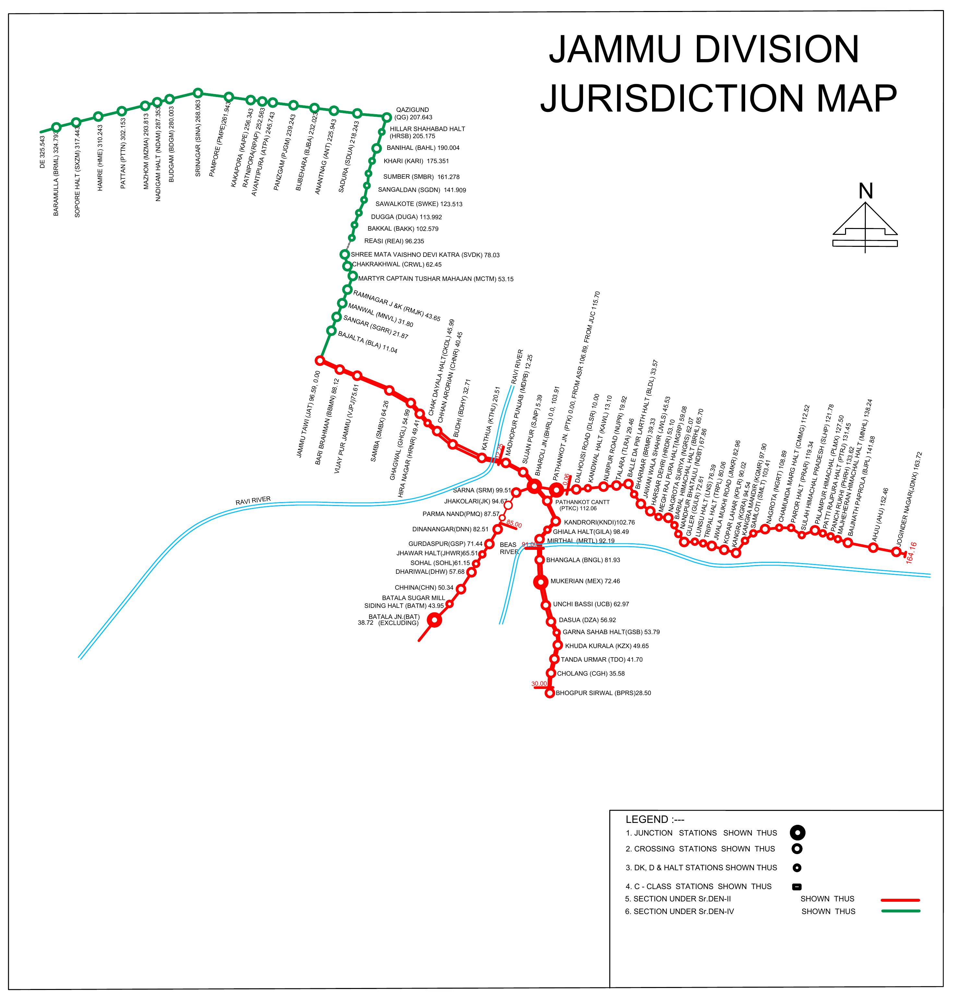

One division.
One connected network.
A station directory and maintenance schedule workspace for the Jammu Division network, including the Kashmir Valley and Kangra Valley sections.

Jammu Division
jurisdiction.
Station lights show maintenance status across the Jammu Division network. Select a light to inspect its schedules.

Schedule
tracker.
Review completed work, upcoming schedules, and overdue maintenance. Each entry identifies its station and individual asset; select one to edit that exact schedule.
Completed uses the Last Done date. Scheduled and Overdue use the Next Due date; a completed item may also appear in either column to show its next action.
Completed
00Scheduled
00Overdue reminders
00Failure
Report.
Log, review, and update failures for individual substations, panels, transformers, pumps, and other station assets.
Stations &
assets.
Choose a route or depot group to view its stations, station codes and Electrical General Branch asset schedules.
Powering the
Jammu rail network.
Track station assets and plan electrical maintenance across Jammu Division, one individual unit at a time.
↓Jammu
Division.
Serving the northernmost reaches of the railway network, Jammu Division connects communities across Jammu and Kashmir and links them with destinations beyond the region. Its routes span the Jammu–Pathankot corridor, the Udhampur–Srinagar–Baramulla Rail Link and the scenic Kangra Valley narrow-gauge line. This GatiVidyut directory supports the Electrical General Branch with a clear view of stations, railway assets and maintenance schedules.